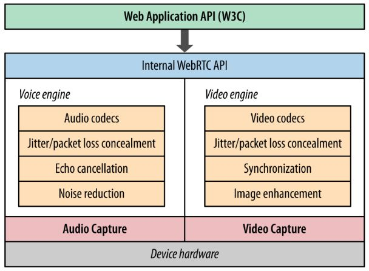
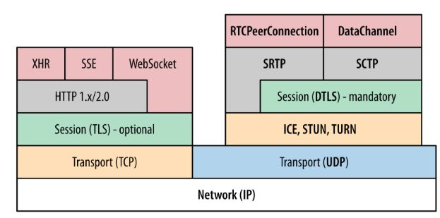
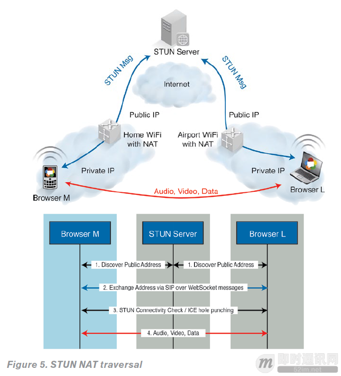
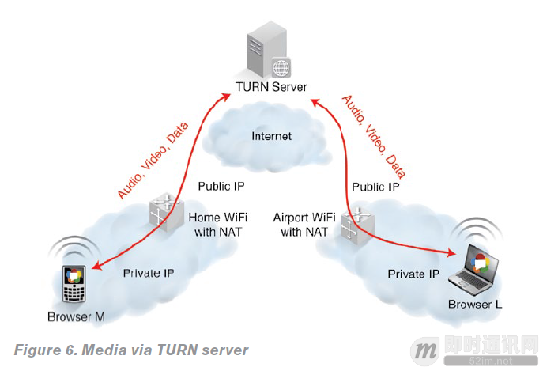

WebRTC
什么是 WebRTC
2010年5月，Google 花费6820万美元收购拥有编解码、回声消除等技术的 GIPS 公司。
之后谷歌开源了 GIPS 的技术，与相关机构 IETF 和 W3C 制定行业标准，组成了现有的 WebRTC 项目。
WebRTC 全称 Web Real-Time Communication。它并不是单一的协议， 包含了媒体、加密、传输层等在内的多个协议标准以及一套基于 JavaScript 的 API。通过简单易用的 JavaScript API ，在不安装任何插件的情况下，让浏览器拥有了 P2P音视频和数据分享的能力。
同时WebRTC 并不是一个孤立的协议，它拥有灵活的信令，可以便捷的对接现有的SIP 和电话网络的系统。
WebRTC 的核心组件
- 音视频引擎：OPUS、VP8 / VP9、H264
- 传输层协议：底层传输协议为 UDP
- 媒体协议：SRTP / SRTCP
- 数据协议：DTLS / SCTPP2P
- 内网穿透：STUN / TURN / ICE / Trickle ICE
-
信令与 SDP 协商：HTTP / WebSocket / SIP、 Offer Answer 模型
- webrtc内部结构

- webrtc协议栈


真正实用的基于P2P的WebRTC架构
WebRTC使用P2P媒体流，音频、视频和数据的连接直接通过浏览器实现。
但是，浏览器却隐藏在 NAT（网络地址翻译）和防火墙的后面，这增加了建立P2P媒体会话的难度。
这些流程和协议，如ICE或Trickle ICE，STUN和TURN，在建立P2P媒体流都是必不可少的。

- 如何使用STUN协议建立一个P2P RTC媒体（如上图所示），简化版的ICE流程如下：
- 两个浏览器通过自己的公网IP地址，使用
STUN协议信息和STUN服务器建立联系； - 两个浏览器通过SDP提供/应答机制，使用呼叫控制信令消息交换它们已发现的公共IP地址（ICE候选）；
- 两个浏览器执行连接检查（ICE冲孔），确保P2P可以连接；
- 建立连接后，RTC媒体会话和媒体交换就可以实现了。
- 但是，假如在一个高度限制的NAT或防火墙，这种直接的路径将无法建立，只能到达
TURN服务器。结果是媒体通过TURN服务器分程传递（如下图所示）。
